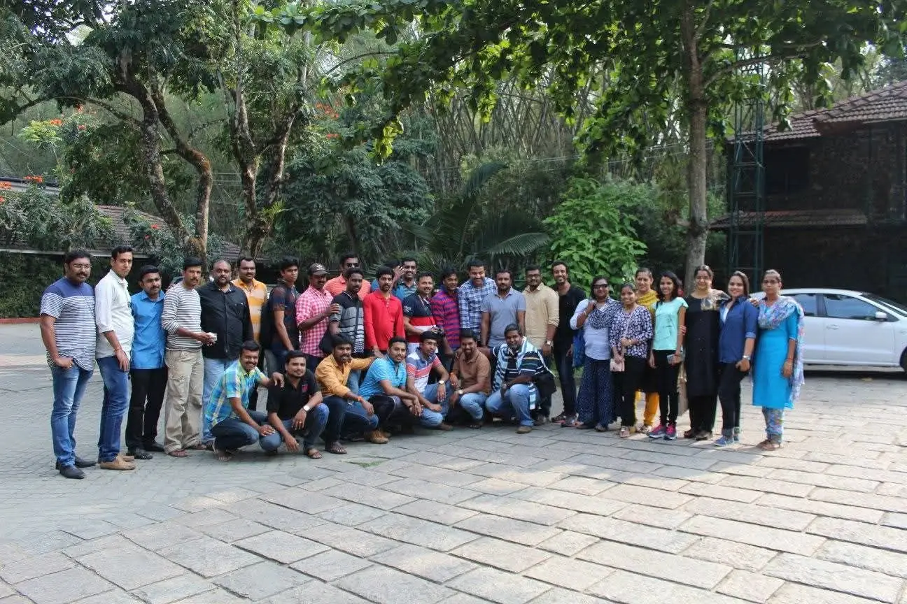
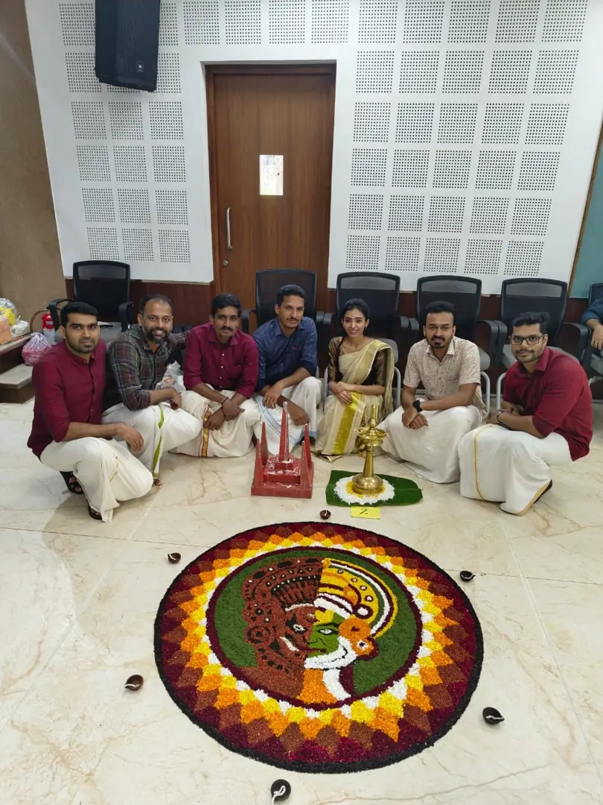

About Us
Who Are We
We are a technology-driven software development division delivering secure, scalable, and innovative digital solutions for modern businesses. Our skilled team of engineers and technology specialists helps organizations transform ideas into powerful digital platforms that drive efficiency and growth.
Our expertise extends to Banking and Fintech, where precision, security, and scalability are critical. We develop digital banking platforms, financial management systems, and payment solutions that empower financial institutions to innovate confidently.
Security and long-term partnerships are central to our approach. By combining strong technical expertise with a deep understanding of business needs, we deliver reliable solutions that support digital transformation and sustainable growth.
Our Core Perspectives
Emsyne delivers business value by leveraging technology with experience, efficiency, and excellence. We remain user-focused, Business-centric approach to individual needs while ensuring integrity and responsibility. Our commitment to quality drives us to give undivided attention and consistency in every project. With innovation, care, and growth at the core, we build sustainable solutions that create lasting impact.
We make it happen by earning trust, walking the path, and owning the outcome.
Why Us
Emsyne provides businesses with an innovative edge through custom applications and IT-enabled services. Our focus is on delivering business value and optimizing resources, capital, and talent. Built on a foundation of institutional trust, we redefine the Fintech landscape through specialized, technology-led financial innovations. We re-engineer processes to meet evolving customer needs with agility. Positioned for transformation, we help businesses unlock growth and enter new markets.
What we do
Emsyne delivers comprehensive IT services that enhance efficiency, productivity, and system integration. With proven expertise in Windows, Oracle, Java, SQL Server, and modern technologies, we create scalable solutions. Our industry insights help us understand client needs and provide unified applications that simplify workflows. From design to deployment, we empower businesses to innovate, make better decisions, and achieve growth.
Emsyne Stories
A glimpse into our proudest moments, celebrating achievements, teamwork, and shared success that reflect our commitment to excellence and growth.

